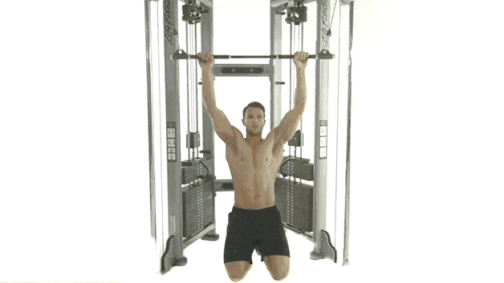

Pull Ups
- Grab the handles of the pull-up station with your palms facing away from you and your arms fully extended.
- Your hands should be around shoulder-width apart
- Squeeze your shoulder blades together, exhale and drive your elbows towards your hips to bring your chin above the bar.
- Lower under control back to the start position

Barbell Deadlift
- Squat down and grasp a barbell with your hands roughly shoulder-width apart.
- Keep your chest up, pull your shoulders back and look straight ahead as you lift the bar.
- Focus on taking the weight back onto your heels and keep the bar as close as possible to your body at all times.
- Lift to thigh level, pause, then return under control to the start position.

Dumbbell Single-arm Row
- Head to a flat bench and place your right hand against it under your shoulder, keeping your arm straight.
- Rest your right knee on the bench and step your other leg out to the side.
- With your free hand grab a dumbbell off the floor and row it up to your side until your upper arm is parallel with the floor.
- Lower slowly back to the floor and repeat.

Lat Pulldown
- Kneel in front of the cable machine and face away.
- Grab the bar with your palms facing away from you, shoulder-width apart.
- Lean back slightly and push your chest out.
- Pull the bar down to your chest, then return slowly to the start position.
- Your torso should remain still throughout.

Single-arm T-Bar Rows
- Add weight to one end of a barbell. Bend forward until your torso is almost parallel to the floor and keep your knees slightly bent.
- Grab the bar with one arm just behind the plates.
- Pull the bar straight up with your elbow in until the plates touch your chest and squeeze your back muscles at the top of the move.
- Slowly lower to the starting position and repeat without letting the plates touch the floor.